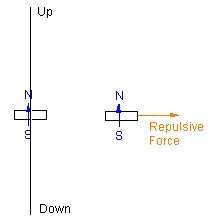
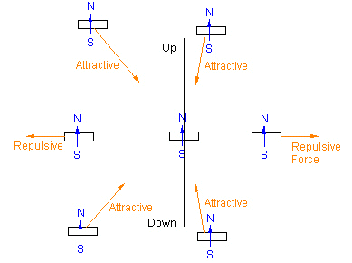
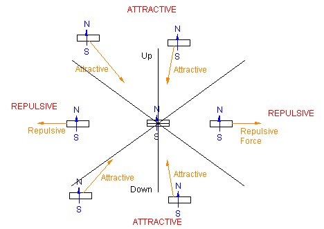
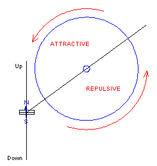
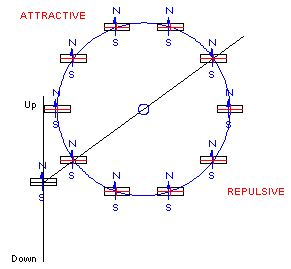
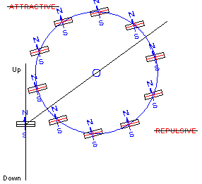
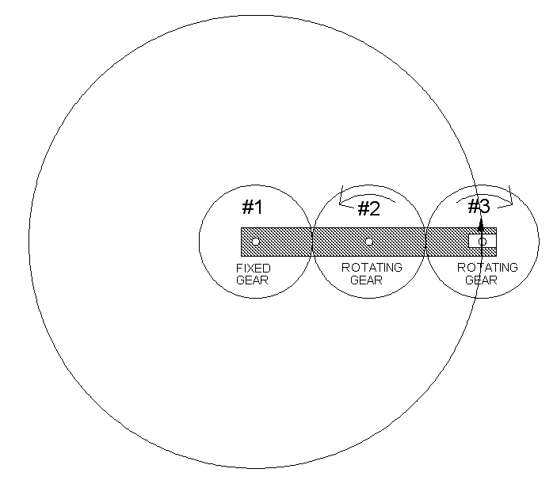
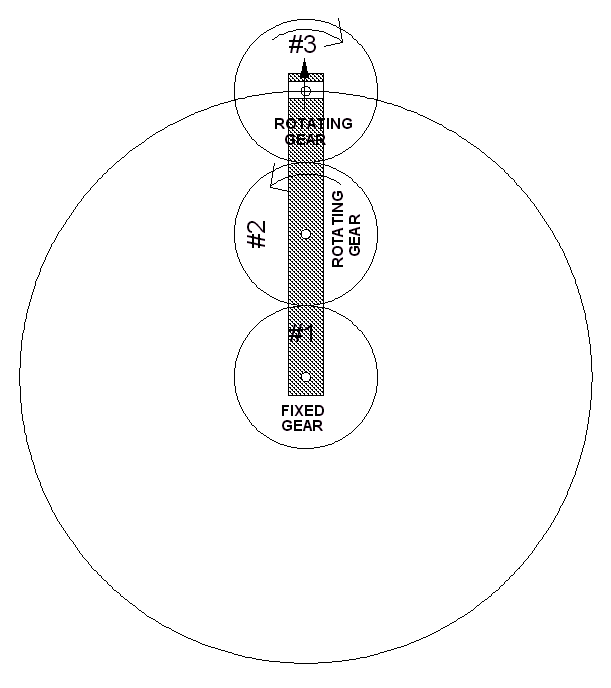

In this article, I will review a motor design I invented which uses the interaction of Dipoles as its motive source. I will first describe the device in general, "loose" language. At the end of this article, I will list all the assumptions I have made along with specific equations.
I have not built this motor. Nor do I know if it will really work. "Physics" says that this motor is impossible because if it worked, it would generate more energy out than the energy input.
However, I am unable to figure out exactly way this motor will not run. So, I am hoping that you will find a flaw in my reasoning. I am hoping to learn what it is I have overlooked. It bugs me that I can not find the flaw in my reasoning. I really hope you can.
So let's begin....
First, let's consider a real example that you can try.
Let's use two magnets as our two dipoles.
Keeping one dipole in a fixed position and not letting it rotate, take the second magnet and move it around the first. You will find that for some orientations and positions of the second magnet you can feel the repulsive and attractive forces between the two dipoles/magnets.
Now, with the first magnet still fixed in place, put the second magnet a few inches away from the first like this.
The orientaion of the second magnet, which you are going to move, with respect to the first magnet is very important. Make sure you have the orientation correct.
Now move the second magnetic in a circle around the first, stationary magnet. Keep the orientation the second magnet so that it is always pointing "up".
You will feel the second magnet being pushed away from the first. Then, as you move it around the first magnet, keeping the orientation pointing "up", there will be a region for which you will feel the second magnet being attracted to the first magnet.
As you continue to move the second magnet around the first, you will find that there are four different regions. Two attractive and two repulsive.
Notice that there are two black lines showing where the repulsive region turns into an attractive region and visa versa.
For all positions along these lines, as long as the second magnet continues to point "up", there will be neither a repulsive nor an attractive radial force on the second magnet.
Can we use this bit of information to build a self-running dipole magnet motor?
Let us position a wheel such that its axis of rotation is on one of these lines. Then 1/2 of the wheel will always be in a repulsive region while the other 1/2 of the wheel will be in an attractive region.
Can we make this wheel rotate by placeing magnets around its rim?
Well, if we can can somehow make the magnets we place around the rim of the wheel in such a way as to also have these magnets pointing "up", no matter what the orientation of the wheel is, then there will be a net radial repulsive force on 1/2 of the wheel and a net radial attractive force on the other 1/2 of the wheel and the wheel should rotate.
Unfortunately, things are far from being that simple. Look what happens when the wheel now rotates just a little.
Clearly, the magnets on the rim of the wheel are no longer pointing "up". This means that the "repulsive" and "attractive" regions are no longer repulsive and attractive. The wheel will turn a little and stop.
We need to make the magnets on the wheels rim rotate as the wheel rotates so they are always pointing "up".
There may be several ways to do this. What comes to my mind right off is a gearing system.
By using 3 gears, all with the same radius and number of teeth, we can keep the magnets at the wheel rim always pointing "up".
 Of course this is all and idealization and so not exactly true. The mathematics says that for idealized point dipoles, there wouldn't be any radial force on the dipoles. But, we don't have idealized dipoles. The magnets are far from point sized.
The interaction between two dipoles is represented by an equation. The equation is usually presented as the potential energy between the two dipoles. When this potential energy function is differentiated with respect to one of the dipole's position, keeping the other dipole fixed at the coordinate origin, we get the force equation between the two dipoles.
It is the force equation, not th energy equation, that I considered here.